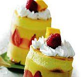

Cake Manggo Puding

Bahan Cake:
- 3 btr telur ayam
- 50 g gula halus
- 1 sdt ovalet
- 30 g tepung terigu
- 2 sdm susu bubuk
- 50 g mentega, cairkan
Bahan Lapisan 1:
- 125 cc santan kental (dari 1 butir kelapa)
- 200 cc susu cair
- 200 cc krim kental
- 150 cc jus mangga (dari 2 buah mangga)
- 1/2 sdt pewarna orange
- 2 bks agar-agar bubuk
- 250 g gula pasir
- 200 cc air
Bahan Lapisan 2:
- 2 bks jeli rasa leci (warna bening)
- 500 cc air
- 150 g gula pasir
Pelengkap :
- 1 cup stroberi
- 1 cup mangga potong
Cara Membuat :
- Cara membuat cake: Campur telur, gula, tepung, susu bubuk, ovalet, kocok hingga putih dan mengembang. Masukkan mentega cair, aduk.
- Tuang ke dalam loyang ukuran 18×18x2 cm yang telah diolesi mentega dan ditaburi tepung. Panggang hingga matang. Angkat, dinginkan.
- Cetak sesuai bentuk plastik mika yang telah dibuat, masukkan pada dasar cetakan plastik mika, lakukan demikian untuk potongan cake yang lain.
- Cara membuat lapisan 1:
Masak agar-agar, air dan gula hingga mendidih, sisihkan. Campur santan, susu dan krim. Angkat. Masukkan jus mangga ke dalam larutan agar-agar, aduk rata. Tambahkan pewarna.
- Cara membuat lapisan 2:
Masak air, gula dan jeli hingga mendidih. Angkat.
- Tuang lapisan 1 di atas bolu hingga 1/2 cetakan. Diamkan hingga lapisan 1 mengeras.
- Susun stroberi di atas lapisan 1, tuang dengan lapisan 2 hingga penuh. Biarkan dingin. Tuang kembali lapisan 1 perlahan-lahan. Biarkan mengeras. Terakhir letakkan potongan cake di atasnya. Hias dengan whipping cream dan potongan stoberi serta mangga.
Untuk 6 porsi